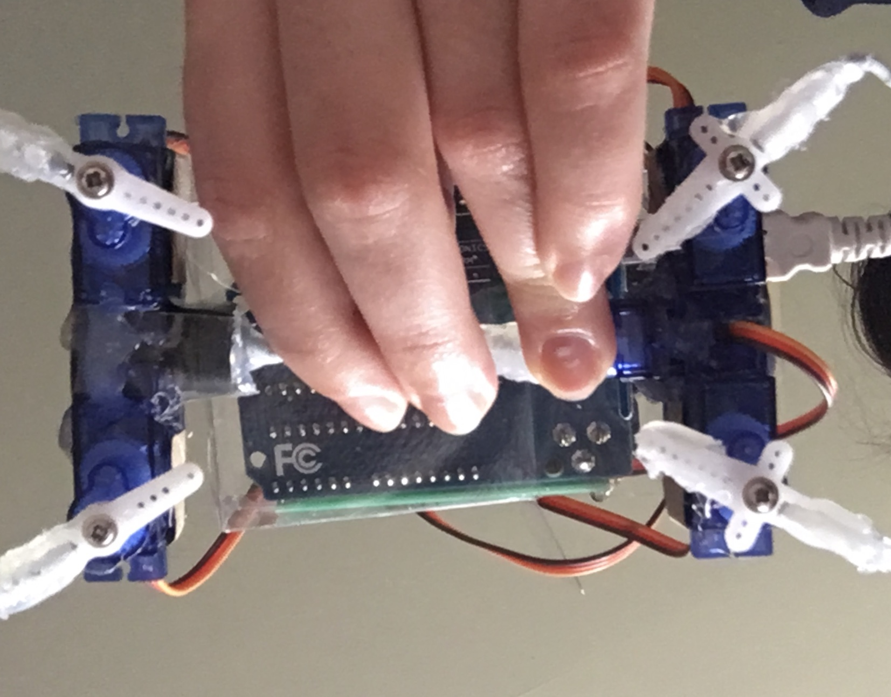
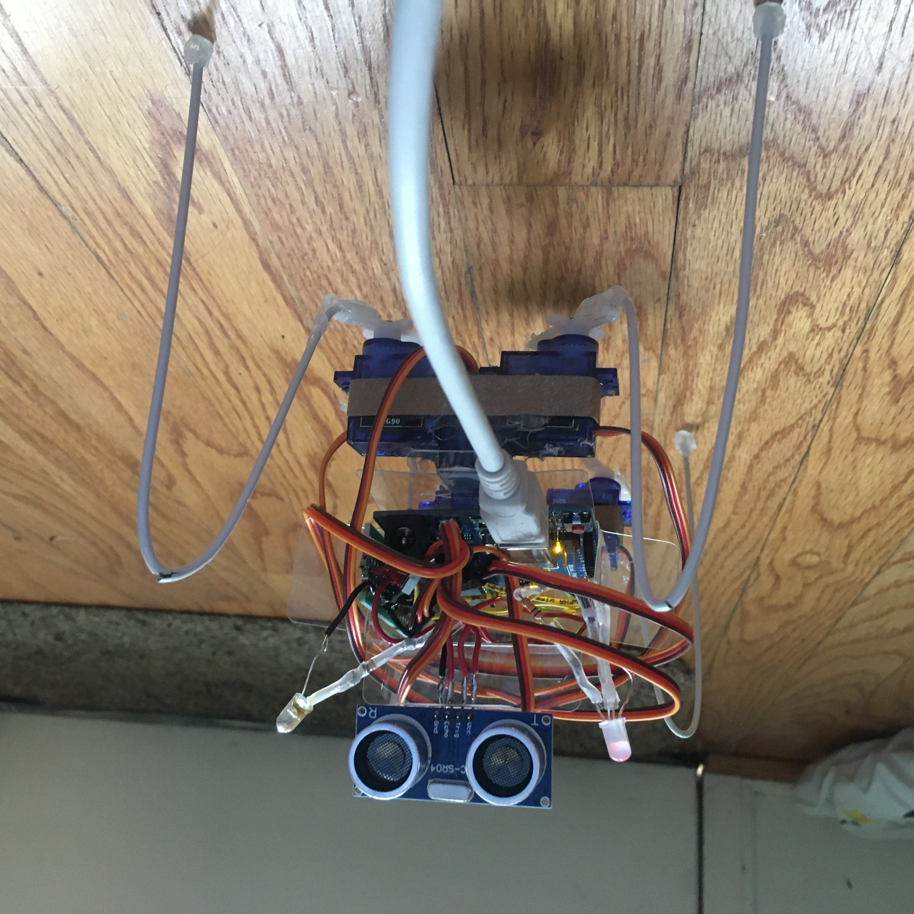
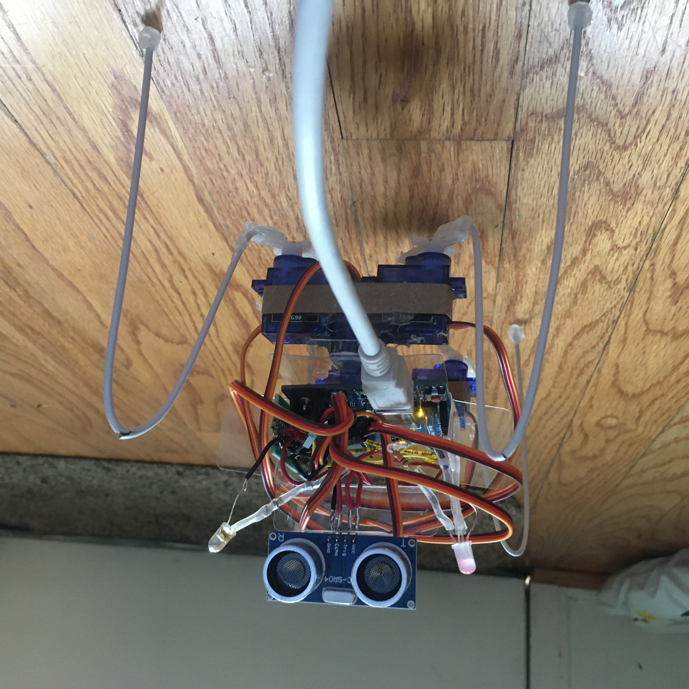

An ultrasound sensor has four pins. From left to right, they should be connected to power (5v), a digital pin, a different digital pin, and ground. The code used for detecting objects using ultrasound is at the very end of the code I uploaded below.
Rob-B
This is my final project for PS70. The name has the beginning of "robot" and sounds like Robby while also having one of our instructor's name, Rob.
Rob-B is a 4 legged walking robot with two LED eyes and can detect obstacles using an ultrasonic sensor.
Video Demo
Assembly
To make the legs, I used a hanger, and cut it up like so. I also use the part under the hook to make a spacer to separate the "hips" from the "shoulders".


The body consists of 5 servos. Be sure you can control them with code before assembly.
This is how the hips and shoulders look before being put together. For the hips, I had to use something to create a separation between the two servos to match the shoulder. Since I am limited on supplies, I rolled up tape really tightly and hot glued the back to keep it stable.

Next, you have to attach the legs. I used hot glue, though if you have rubber steel apoxy that might be better. It should be stable. This photo shows the underside of the robot. The wires are attached to half of the servo horn to expose the screw for removal, but this is not necessary.
Video Demo - First Steps!
Before putting on the other components of this project, I recommend making sure the servos are calibrated to their center angle (start at 1550, and adjust) and that the walking machinery works.
Here is a blooper, and a reminder to screw in the servo horns before attempting to walk.
Understanding Ultrasound and Set Up
An ultrasound sensor has four pins. From left to right, they should be connected to power (5v), a digital pin, a different digital pin, and ground.
The code used for detecting objects using ultrasound is at the very end of the code I uploaded below.
For more information on how ultrasound sensors work and help calibrating and understanding servo motors, please see last week's page.
Putting it all Together

Now that I have a plan and a conveniniently sized box, I would begin soldering wires to my prototype boards! I took curved pins that came with the boards to connect the prototype board to ground and 5v. Then, I connected multiple wires to power the servos and the ultrasound. This was the same for ground.
I was able to fit the ultrasound through a hole. It should be parallel to the ground. I also soldering each pin to a wire to connect them to the arduino.
Finally, I plugged in the servo motor wires, then wrapped them around the body, attached the two LEDs, and attached the ultrasound. For the LEDs I used heatshrink with solder in the center. These can be bought premade online.
 

Explanation of Code
The code begins with establishing global variables. They have been mostly organized by category: Servos, run time, sonar, counters, and LEDs. Then comes a set up that goes through establishing the middle angle for the servos. Refer to link above if you would like more explanation on why my numbers are as they are instead of angles. I set my LEDs as outputs and set the necessary specifics for the ultrasound. The LEDs turn on (via function WAKEUP()). Finally, I set distance, a very important global variable for establishing when he will stop and start, by setting it equal to the ultrasound function (which outputs the distance in cm there is an object).Code for Project
Some of this code is based off this project. I manipulated the code to change certain functionality, but giving credit where credit is due.
#include
// some code adapted from http://chaoticvoltage.blogspot.com/2016/12/walter-arduino-insect-robot.html
// Servos:
Servo SERVO_shaft;
Servo SERVO_front_left;
Servo SERVO_front_right;
Servo SERVO_back_left;
Servo SERVO_back_right;
// ****Calibrate servos' center angle (in microseconds because we'll use "xx.writeMicroseconds();" command). Start with 1500.
const int ANGLE_mid_Shaft = 1600;
const int ANGLE_mid_FLeft = 1360;
const int ANGLE_mid_FRight = 1360;
const int ANGLE_mid_BLeft = 1600;
const int ANGLE_mid_BRight = 1360;
const int ANGLE_sweep = 220; // **Set this value (in microseconds) to determine how wide the servos will sweep (legs' step width). Bigger value means wider sweep angle.
const int ANGLE_res = 10; // **Set the servo movement resolution (in microseconds) at least at minimum servo's default dead band width (highest resolution) or more (less resolution). The servo motor used in my project, an SG90, has a servo dead band width of 10 microseconds.
int sweepSPEED; // variable to determine how fast the servos will sweep.
int sweepSPEED_Rand[3] = {6, 7, 8}; // **Servo speed (gait speed) will change randomly in 3 modes. Set the speed (in miliseconds) for each mode. Smaller value means faster.
// Variables for each servos' angles:
int ANGLE_shaft = ANGLE_mid_Shaft;
int ANGLE_front_left = ANGLE_mid_FLeft;
int ANGLE_front_right = ANGLE_mid_FRight;
int ANGLE_back_left = ANGLE_mid_BLeft;
int ANGLE_back_right = ANGLE_mid_BRight;
// Angle manipulation for middle servo (shaft).
const int ANGLE_max_Shaft = ANGLE_mid_Shaft + ANGLE_sweep;
const int ANGLE_min_Shaft = ANGLE_mid_Shaft - ANGLE_sweep;
int ANGLE_sweep_val;
// Variables for recording current angles of each servos:
int ANGLE_shaft_record;
int ANGLE_front_left_record;
int ANGLE_front_right_record;
int ANGLE_back_left_record;
int ANGLE_back_right_record;
const int distRetreat = 25; // **Configure minimum distance (in cm) between the robot and obstacle before the robot avoid it by retreating.
// **Configure how long the bot rest & run (in milliseconds).
const int RUN_time = 10000;
const int REST_time = 3000;
// Sonar
//const int SONAR_sum = 1; // Amount of sonars used.
int PIN_trig = 2; // ***Set arduino pins connected to ultrasonic sensors' trigger pins; {front, left, right}.
int PIN_ec = 3; // ***Set arduino pins connected to ultrasonic sensors' echo pins; {front, left, right}.
const int SONAR_TrigSig = 10; // Duration (in µS) of trigger signal the sensors needed to produce ultrasonic sound (already specified by the products, don't change this value).
const unsigned long SONAR_MaxEc = 50000; // Maximum duration (in µS) of the echo signal given by the sensors (already specified by the products, don't change this value).
const float SOUND_speed = 0.034; // The speed of sound on air in µS/cm (already specified by sciene, avatar Aang is needed to do air bending if this value is wanted to be changed).
int distance; // Results of the calculation of distance.
const int FRONT = 0;
// That things such as flags, counters, records
int ANGLE_prev;
int flag_shaft_reverse;
int flag_transition_rotate;
int flag_transition_start = 1;
int flag_rest = 0;
int flag_RUN_time = 0;
int rotate_random;
int counter_gait;
//LEDs
int led_one_r = 13; // LED pin red
int led_one_g = 12; // LED pin green
int led_two = 5; // LED pin
void setup() {
SERVO_shaft.attach(11); // ***Set up horizontal (shaft) servo's signal pin on arduino.
SERVO_front_left.attach(9); // ***Set up front-left servo's signal pin on arduino.
SERVO_front_right.attach(8); // ***Set up front-right servo's signal pin on arduino.
SERVO_back_left.attach(10); // ***Set up back-left servo's signal pin on arduino.
SERVO_back_right.attach(7); // ***Set up back-right servo's signal pin on arduino.
// Get the servos ready at their middle angles.
SERVO_shaft.writeMicroseconds(ANGLE_mid_Shaft);
SERVO_front_left.writeMicroseconds(ANGLE_mid_FLeft);
SERVO_front_right.writeMicroseconds(ANGLE_mid_FRight);
SERVO_back_left.writeMicroseconds(ANGLE_mid_BLeft);
SERVO_back_right.writeMicroseconds(ANGLE_mid_BRight);
Serial.begin(9600); // initialize serial communication at 9600 bits per second
//initialize LEDs and switch
pinMode(led_one_r, OUTPUT);
pinMode(led_one_g, OUTPUT);
pinMode(led_two, OUTPUT);
//set up for Sonar
pinMode(PIN_trig, OUTPUT);
pinMode(PIN_ec, INPUT);
digitalWrite(PIN_trig, LOW);
WAKEUP();
distance = SONAR_READ_DIS(); // Initiate first sonar reading before doing anything,
// SONAR_READ_DIS();
delay(3000);
}
void loop() {
int state = random(0, 2);
if (state == 0) {
REST();
}
else {
sweepSPEED = 7; // set the speed, higher values are slower
RUN();
flag_rest = 0;
}
}
void WAKEUP() {
digitalWrite(led_one_g, HIGH); //turn off one
delay(300);
digitalWrite(led_two, HIGH); //turn off two
// Get the servos ready at their middle angles.
SERVO_shaft.writeMicroseconds(ANGLE_mid_Shaft);
SERVO_front_left.writeMicroseconds(ANGLE_mid_FLeft);
SERVO_front_right.writeMicroseconds(ANGLE_mid_FRight);
SERVO_back_left.writeMicroseconds(ANGLE_mid_BLeft);
SERVO_back_right.writeMicroseconds(ANGLE_mid_BRight);
}
void REST() {
if (flag_rest == 0) {
TRANSITION_GAIT();
flag_rest = 1;
}
delay(REST_time);
}
//run the walking protocol
void RUN() {
unsigned long TIMER_state = millis();
while ((millis() - TIMER_state) <= RUN_time) {
if (distance > distRetreat) {
digitalWrite(led_one_r, LOW); //turn off green one
digitalWrite(led_one_g, HIGH); //turn on red onet
flag_RUN_time = 0;
while (flag_RUN_time == 0) {
FORWARD();
}
}
else {
STOP();
delay(1000);
distance = SONAR_READ_DIS();
}
}
}
//commence gait functions
//shaft
void SHAFT() {
unsigned long TIMER_servo = millis();
while ((millis() - TIMER_servo) <= sweepSPEED) {
while (ANGLE_shaft == ANGLE_mid_Shaft) {
counter_gait++;
distance = SONAR_READ_DIS();
flag_RUN_time = 1;
break;
}
}
if (ANGLE_prev < ANGLE_shaft && ANGLE_shaft < ANGLE_max_Shaft) {
ANGLE_prev = ANGLE_shaft;
ANGLE_shaft += ANGLE_res;
}
else if (ANGLE_shaft >= ANGLE_max_Shaft) {
ANGLE_prev = ANGLE_shaft;
ANGLE_shaft -= ANGLE_res;
}
else if (ANGLE_prev > ANGLE_shaft && ANGLE_shaft > ANGLE_min_Shaft) {
ANGLE_prev = ANGLE_shaft;
ANGLE_shaft -= ANGLE_res;
}
else if (ANGLE_shaft <= ANGLE_min_Shaft) {
ANGLE_prev = ANGLE_shaft;
ANGLE_shaft += ANGLE_res;
}
SERVO_shaft.writeMicroseconds(ANGLE_shaft);
}
void SHAFT_REVERSE() {
if (ANGLE_prev < ANGLE_shaft) {
ANGLE_prev = ANGLE_shaft + 1;
}
else if (ANGLE_prev > ANGLE_shaft) {
ANGLE_prev = ANGLE_shaft - 1;
}
}
//shaft movement done
//transition
void TRANSITION_GAIT() {
ANGLE_front_left_record = ANGLE_front_left;
ANGLE_front_right_record = ANGLE_front_right;
ANGLE_back_left_record = ANGLE_back_left;
ANGLE_back_right_record = ANGLE_back_right;
ANGLE_shaft_record = ANGLE_shaft;
int flag = HIGH;
int counter = 0;
while (flag == HIGH) {
SHAFT();
counter++;
ANGLE_front_left = map(counter, 1, ((ANGLE_sweep * 2) / ANGLE_res), ANGLE_front_left_record, ANGLE_mid_FLeft);
ANGLE_front_right = map(counter, 1, ((ANGLE_sweep * 2) / ANGLE_res), ANGLE_front_right_record, ANGLE_mid_FRight);
ANGLE_back_left = map(counter, 1, ((ANGLE_sweep * 2) / ANGLE_res), ANGLE_back_left_record, ANGLE_mid_BLeft);
ANGLE_back_right = map(counter, 1, ((ANGLE_sweep * 2) / ANGLE_res), ANGLE_back_right_record, ANGLE_mid_BRight);
SERVO_shaft.writeMicroseconds(ANGLE_shaft);
SERVO_front_left.writeMicroseconds(ANGLE_front_left);
SERVO_front_right.writeMicroseconds(ANGLE_front_right);
SERVO_back_left.writeMicroseconds(ANGLE_back_left);
SERVO_back_right.writeMicroseconds(ANGLE_back_right);
if (counter == ((ANGLE_sweep * 2) / ANGLE_res)) {
flag = LOW;
WAKEUP();
flag_transition_rotate = 0;
}
}
}
void TRANSITION_START() {
if (ANGLE_shaft == ANGLE_mid_Shaft || (ANGLE_shaft > ANGLE_mid_Shaft && ANGLE_shaft > ANGLE_prev) || (ANGLE_shaft < ANGLE_mid_Shaft && ANGLE_shaft < ANGLE_prev)) {
ANGLE_sweep_val = 0;
}
else {
flag_transition_start = 0;
}
}
//transition done
//walk
void FORWARD() {
while (flag_transition_rotate == 2) {
TRANSITION_GAIT();
}
flag_transition_rotate = 1;
while (flag_shaft_reverse == 0) {
SHAFT_REVERSE();
break;
}
flag_shaft_reverse = 1;
while (flag_transition_start == 1) {
SHAFT();
TRANSITION_START();
WALK();
}
SHAFT();
ANGLE_sweep_val = ANGLE_sweep;
WALK();
}
void STOP() {
digitalWrite(led_one_g, LOW); //turn off green one
digitalWrite(led_one_r, HIGH); //turn on red one
// // Get the servos ready at their middle angles.
SERVO_shaft.writeMicroseconds(ANGLE_mid_Shaft);
SERVO_front_left.writeMicroseconds(ANGLE_mid_FLeft);
SERVO_front_right.writeMicroseconds(ANGLE_mid_FRight);
SERVO_back_left.writeMicroseconds(ANGLE_mid_BLeft);
SERVO_back_right.writeMicroseconds(ANGLE_mid_BRight);
}
void WALK() { //modified to no longer include light
if (ANGLE_shaft >= ANGLE_mid_Shaft && ANGLE_prev < ANGLE_shaft) {
ANGLE_front_left = map(ANGLE_shaft, ANGLE_mid_Shaft, ANGLE_max_Shaft, ((ANGLE_mid_FLeft - ANGLE_sweep_val) ), ANGLE_mid_FLeft);
ANGLE_front_right = map(ANGLE_shaft, ANGLE_mid_Shaft, ANGLE_max_Shaft, ((ANGLE_mid_FRight - ANGLE_sweep_val) ), ANGLE_mid_FRight);
ANGLE_back_left = map(ANGLE_shaft, ANGLE_mid_Shaft, ANGLE_max_Shaft, ((ANGLE_mid_BLeft + ANGLE_sweep_val) ), ANGLE_mid_BLeft);
ANGLE_back_right = map(ANGLE_shaft, ANGLE_mid_Shaft, ANGLE_max_Shaft, ((ANGLE_mid_BRight + ANGLE_sweep_val) ), ANGLE_mid_BRight);
}
else if (ANGLE_shaft >= ANGLE_mid_Shaft && ANGLE_prev > ANGLE_shaft) {
ANGLE_front_left = map(ANGLE_shaft, ANGLE_max_Shaft, ANGLE_mid_Shaft, ANGLE_mid_FLeft, ((ANGLE_mid_FLeft + ANGLE_sweep_val) ));
ANGLE_front_right = map(ANGLE_shaft, ANGLE_max_Shaft, ANGLE_mid_Shaft, ANGLE_mid_FRight, ((ANGLE_mid_FRight + ANGLE_sweep_val) ));
ANGLE_back_left = map(ANGLE_shaft, ANGLE_max_Shaft, ANGLE_mid_Shaft, ANGLE_mid_BLeft, ((ANGLE_mid_BLeft - ANGLE_sweep_val) ));
ANGLE_back_right = map(ANGLE_shaft, ANGLE_max_Shaft, ANGLE_mid_Shaft, ANGLE_mid_BRight, ((ANGLE_mid_BRight - ANGLE_sweep_val) ));
}
else if (ANGLE_shaft < ANGLE_mid_Shaft && ANGLE_prev > ANGLE_shaft) {
ANGLE_front_left = map(ANGLE_shaft, ANGLE_mid_Shaft, ANGLE_min_Shaft, ((ANGLE_mid_FLeft + ANGLE_sweep_val) ), ANGLE_mid_FLeft);
ANGLE_front_right = map(ANGLE_shaft, ANGLE_mid_Shaft, ANGLE_min_Shaft, ((ANGLE_mid_FRight + ANGLE_sweep_val) ), ANGLE_mid_FRight);
ANGLE_back_left = map(ANGLE_shaft, ANGLE_mid_Shaft, ANGLE_min_Shaft, ((ANGLE_mid_BLeft - ANGLE_sweep_val) ), ANGLE_mid_BLeft);
ANGLE_back_right = map(ANGLE_shaft, ANGLE_mid_Shaft, ANGLE_min_Shaft, ((ANGLE_mid_BRight - ANGLE_sweep_val) ), ANGLE_mid_BRight);
}
else if (ANGLE_shaft < ANGLE_mid_Shaft && ANGLE_prev < ANGLE_shaft) {
ANGLE_front_left = map(ANGLE_shaft, ANGLE_min_Shaft, ANGLE_mid_Shaft, ANGLE_mid_FLeft, ((ANGLE_mid_FLeft - ANGLE_sweep_val) ));
ANGLE_front_right = map(ANGLE_shaft, ANGLE_min_Shaft, ANGLE_mid_Shaft, ANGLE_mid_FRight, ((ANGLE_mid_FRight - ANGLE_sweep_val) ));
ANGLE_back_left = map(ANGLE_shaft, ANGLE_min_Shaft, ANGLE_mid_Shaft, ANGLE_mid_BLeft, ((ANGLE_mid_BLeft + ANGLE_sweep_val) ));
ANGLE_back_right = map(ANGLE_shaft, ANGLE_min_Shaft, ANGLE_mid_Shaft, ANGLE_mid_BRight, ((ANGLE_mid_BRight + ANGLE_sweep_val) ));
}
SERVO_front_left.writeMicroseconds(ANGLE_front_left);
SERVO_front_right.writeMicroseconds(ANGLE_front_right);
SERVO_back_left.writeMicroseconds(ANGLE_back_left);
SERVO_back_right.writeMicroseconds(ANGLE_back_right);
}
//walk functions done
//Gait functions done
// Ultrasonic reading
int SONAR_READ_DIS() {
long duration;
long distance;
digitalWrite(PIN_trig, HIGH);
delayMicroseconds(10); //SONAR_TrigSig
digitalWrite(PIN_trig, LOW);
duration = pulseIn(PIN_ec, HIGH, SONAR_MaxEc);
while (duration > 0.0) {
distance = duration * (SOUND_speed / 2.0);
delay(50);
break;
}
while (duration == 0.0) {
distance = 501.0;
break;
}
Serial.println(distance);
return distance;
}